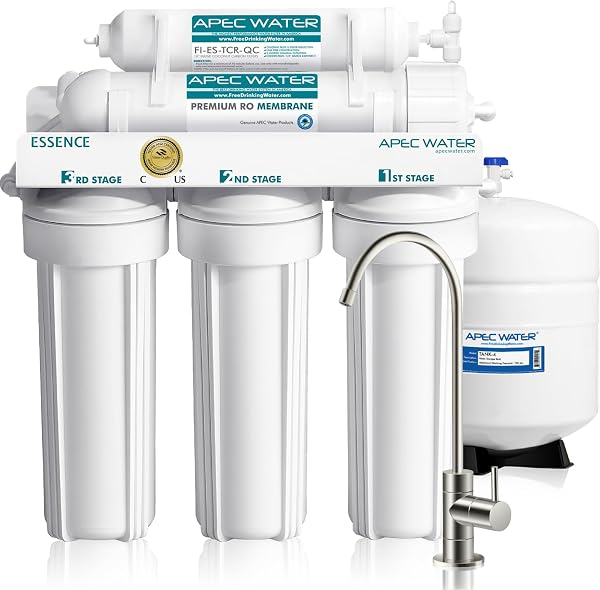
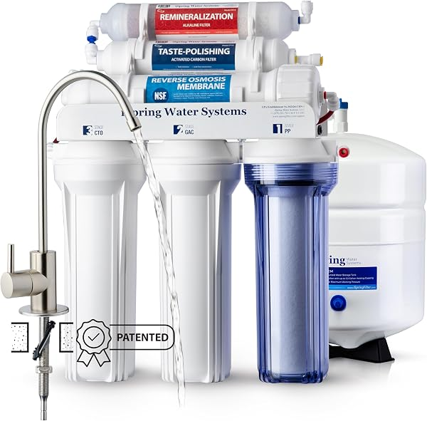

APEC vs iSpring vs Waterdrop: Reverse Osmosis Showdown 2026
PureFlow Lab is reader-supported. We may earn a commission when you buy through links in this guide — at no extra cost to you. As an Amazon Associate, we earn from qualifying purchases. See our Disclosure for details.
The Quick Verdict
Three of the most-recommended under-sink reverse osmosis systems on the market, three different philosophies. Here’s who wins, fast:

APEC ROES-50 — 5-Stage, US-Assembled
The proven workhorse. 5-stage, NSF/ANSI 58 & 372 certified, US-assembled with US-made filters, 9,000+ reviews at 4.6 stars. The pick if you want a no-drama RO system from a brand with the strongest reputation for build quality and support. ~$200.
Check Price on Amazon →
iSpring RCC7AK — 6-Stage Alkaline, 75 GPD
The most popular RO system on Amazon, period — 21,000+ reviews at 4.6 stars. 6-stage with alkaline remineralization built in, 75 GPD (faster than APEC’s 50), patented top-mount faucet for easier install. The pick if you want better-tasting water without paying tankless prices. ~$235.
Check Price on Amazon →
Waterdrop G3P600 — 8-Stage Tankless, 600 GPD
The modern pick. Tankless (no storage tank), 600 GPD output, the full NSF/ANSI 42/53/58/372 certification stack, 2:1 wastewater ratio, smart LED faucet. The pick if you want the best technology and can absorb roughly double the price. ~$439–$539.
Check Price on Amazon →TL;DR: If you want the safest all-around buy at the lowest sensible price, get the APEC ROES-50 (~$200) — best reputation, US-assembled, 9,000+ reviews. If you want better-tasting water and faster flow for a little more, get the iSpring RCC7AK (~$235) — alkaline remineralization, 75 GPD, and the easiest install of the three thanks to its top-mount faucet. If you want the best technology — tankless design, huge capacity, and the fullest certifications — and the budget to match, get the Waterdrop G3P600 (~$439–$539). All three are genuinely good; the right answer depends on whether you optimize for value (APEC), taste (iSpring), or technology (Waterdrop). On a tighter budget than any of these, the Express Water RO5DX (~$153) is worth a look too.
These three brands come up again and again when you research reverse osmosis — and for good reason. They represent the three credible answers to “what should I actually buy.” This showdown puts them head-to-head across the dimensions that decide the purchase, with honest calls on where each one wins. For the full field of RO systems, see our best reverse osmosis systems guide.
Meet the Contenders
APEC ROES-50 — The reputation pick. APEC (a California company) has been making the ROES-50 for over a decade, and it’s the system most often recommended by people who actually install RO for a living. Tank-based, 5-stage, 50 GPD, NSF/ANSI 58 & 372 certified, US-assembled with US-made filters. 9,346 reviews at 4.6 stars. ~$200. Read our full APEC review for the rest of the lineup.
iSpring RCC7AK — The popularity pick. The RCC7AK is the single most-reviewed RO system on Amazon (21,000+ ratings at 4.6 stars), and it earned that through a smart combination: 6-stage filtration with alkaline remineralization, a faster 75 GPD membrane, and a patented top-mount faucet that makes installation noticeably easier. Tank-based. ~$235. Read our full iSpring review for the rest of the lineup.
Waterdrop G3P600 — The technology pick. Waterdrop pioneered the modern tankless RO category, and the G3P600 is its mainstream flagship: tankless (no storage tank under the sink), 600 GPD output, 8-stage filtration, the full NSF/ANSI 42/53/58/372 stack, a 2:1 wastewater ratio, and a smart LED faucet. 3,963 reviews at 4.5 stars. ~$439–$539. Read our full Waterdrop review for the rest of the lineup.
Head-to-Head: The Dimensions That Decide It
Price
No contest on sticker price. The APEC ROES-50 (~$200) and iSpring RCC7AK (~$235) are in the same budget tier; the Waterdrop G3P600 (~$439–$539) costs roughly double. That gap is the single biggest factor in this comparison — you’re paying for tankless engineering and the fuller certification stack. Whether that’s worth it is the central question, and we’ll answer it below.
Winner: APEC (cheapest), with iSpring a close second.
Filtration & Certifications
All three remove the contaminants that matter — that’s what reverse osmosis does. The differences are in stage count and how many NSF standards each is certified against:
- APEC ROES-50: 5 stages, NSF/ANSI 58 & 372 certified (RO performance + lead-free materials), plus WQA Gold Seal certification.
- iSpring RCC7AK: 6 stages including alkaline remineralization, NSF-certified components.
- Waterdrop G3P600: 8 stages, the full NSF/ANSI 42/53/58/372 stack — certified for chlorine/taste (42), lead and VOCs (53), RO performance (58), and lead-free materials (372).
On paper, Waterdrop carries the broadest certification stack. In practice, all three produce excellent drinking water; the extra certifications matter most to spec-sheet shoppers and anyone with a specific contaminant concern (in which case, test your water first).
Winner: Waterdrop (broadest certifications), but all three are genuinely sufficient.
Water Taste (The Alkaline Factor)
The most common complaint about RO water is that it tastes “flat” — the membrane strips out the dissolved minerals that give water its taste. Here’s where iSpring pulls ahead of APEC:
- iSpring RCC7AK: Alkaline remineralization is built in. Adds minerals back, raising pH and restoring a more natural, spring-water taste.
- APEC ROES-50: No remineralization in the base model. (APEC sells a separate alkaline model, the ROES-PH75, if you want it from them.)
- Waterdrop G3P600: No alkaline stage in the G3P600; you’d add a separate cartridge or step up to a different Waterdrop model.
If better-tasting water out of the box matters to you, the iSpring is the only one of these three that includes it.
Winner: iSpring (alkaline built in).
Flow & Capacity (Tankless vs Tank)
This is Waterdrop’s home turf:
- Waterdrop G3P600: Tankless, 600 GPD. There’s no storage tank — water is filtered on demand, so you never “run out” and wait for a tank to refill. Also reclaims 12-18 inches of under-sink cabinet space.
- iSpring RCC7AK: Tank-based, 75 GPD membrane feeding a ~3 gallon tank. Faster membrane than APEC.
- APEC ROES-50: Tank-based, 50 GPD membrane feeding a ~3 gallon tank. The slowest-refilling of the three.
For a normal household, a 3-gallon tank is plenty and the refill rate is a non-issue. For a large family that draws water heavily, the tankless Waterdrop (or at least iSpring’s faster 75 GPD) is the more comfortable choice.
Winner: Waterdrop (tankless, effectively unlimited), iSpring second.
Wastewater Ratio
RO systems send some water to the drain. Lower waste is better for your water bill and the environment:
- Waterdrop G3P600: ~2:1 pure-to-drain (efficient).
- iSpring RCC7AK & APEC ROES-50: Traditional tank-based ratios, roughly 1:3 (less efficient).
Over a year, the Waterdrop’s better ratio means tens of thousands of gallons less wastewater for the same drinking water.
Winner: Waterdrop (significantly more water-efficient).
Installation
All three are DIY-installable in an afternoon, but ease differs:
- iSpring RCC7AK: The patented top-mount faucet is the standout — it’s designed so the trickiest part of an RO install (mounting and connecting the faucet) is far simpler. Most-praised install experience of the three.
- Waterdrop G3P600: Tankless design means fewer components and no tank to position, and quick-connect fittings throughout. Genuinely easy, though it requires a power outlet under the sink (the booster pump needs electricity).
- APEC ROES-50: Standard, well-documented tank-based install. Nothing tricky, but the traditional faucet mounting is the fiddliest of the three.
Winner: iSpring (top-mount faucet), with Waterdrop close behind (no tank, but needs power).
Long-Term Maintenance Cost
Filters are the ongoing cost. Cheaper, widely-available filters win here:
- APEC ROES-50: Inexpensive, widely available filters; US-made. Among the lowest long-term cost.
- iSpring RCC7AK: Inexpensive, widely available filters. Low long-term cost.
- Waterdrop G3P600: Proprietary quick-change cartridges — easy to swap (no tools) but 15-30% pricier over a 5-year span.
Winner: APEC / iSpring (tie — both cheaper to maintain than Waterdrop).
Smart Features
- Waterdrop G3P600: Smart LED faucet with status indicators; the higher G3P800 adds leak detection and a TDS display.
- iSpring RCC7AK & APEC ROES-50: No smart features. Proven mechanical simplicity.
If you value real-time status and the option to step up to leak detection, Waterdrop is the only one of the three playing in that space.
Winner: Waterdrop (only one with smart features).
Scorecard
| Dimension | APEC ROES-50 | iSpring RCC7AK | Waterdrop G3P600 |
|---|---|---|---|
| Price (~) | $200 | $235 | $439–$539 |
| Type | Tank | Tank | Tankless |
| Stages | 5 | 6 (alkaline) | 8 |
| Flow (GPD) | 50 | 75 | 600 |
| NSF certs | 58, 372 | NSF components | 42/53/58/372 |
| Alkaline | No | Yes | No |
| Wastewater ratio | ~1:3 | ~1:3 | ~2:1 |
| Smart features | No | No | Yes (LED faucet) |
| Install ease | Good | Best (top-mount) | Very good (needs power) |
| Filter cost | Low | Low | Higher |
| Reviews | 4.6★ (9,346) | 4.6★ (21K) | 4.5★ (3,963) |
| Made / assembled | USA | China | China (US-designed) |
Model Variants Worth Knowing
Each of these three is really a family, not a single product. If the headline model isn’t quite right, here’s the variant to look at instead:
APEC — The ROES-50 is the base. If you want alkaline remineralization (the iSpring’s main advantage), APEC makes the ROES-PH75, which adds a 6th remineralization stage and a faster 75 GPD membrane. There’s also the RO-90 for a higher 90 GPD flow. Same proven APEC build quality, just configured up.
iSpring — The RCC7AK is the alkaline model. There’s a plain RCC7 (no alkaline, slightly cheaper) if you don’t want remineralization, and the RCC7AK-UV (~$330), which adds a UV sterilization stage — the version to get if you’re on well water or any unchlorinated source.
Waterdrop — The G3P600 is the mainstream pick, but the lineup runs from the budget D6 (~$299) up to the smart G3P800 (~$849, adds leak detection and a TDS display) and the flagship X16 (~$1,599, 1,600 GPD with alkaline). For countertop, no-plumbing situations, the M6H Instant Hot is the one. Our full Waterdrop review breaks down the entire family.
The takeaway: if one brand’s philosophy appeals but the specific model is off — too slow, no alkaline, no UV — there’s almost always a sibling that fixes it without switching brands.
Which Should You Buy?
Buy the APEC ROES-50 if: you want the safest all-around purchase at the lowest sensible price. It has the strongest reputation for build quality and support, it’s US-assembled with US-made filters, and 9,000+ reviews back it up. This is the default recommendation for most buyers who don’t specifically need alkaline taste or tankless capacity. ~$200.
Buy the iSpring RCC7AK if: you want better-tasting water (alkaline remineralization), faster flow (75 GPD), and the easiest installation (top-mount faucet) — all for only modestly more than the APEC. With 21,000+ reviews it’s also the most battle-tested system here. This is the pick if taste and install ease matter to you. ~$235.
Buy the Waterdrop G3P600 if: you want the best technology and can absorb roughly double the price. Tankless design (no tank, reclaims cabinet space), 600 GPD (never wait for water), the fullest NSF certifications, a far better wastewater ratio, and smart features. This is the pick if you want a modern system and the budget isn’t the deciding factor. ~$439–$539. See our full Waterdrop review for the rest of the lineup.
Consider a fourth option if budget is tight: none of these is the absolute cheapest. The Express Water RO5DX (~$153) undercuts all three with NSF 372 & 58 certifications and 6,000+ reviews — see our Express Water review. And if you can’t install under-sink at all, the countertop AquaTru is worth a look.
FAQ
Is APEC or iSpring better?
Both are excellent budget tank-based RO systems. APEC has the stronger build-quality reputation and is US-assembled, making it the safer “buy it and forget it” choice. iSpring adds alkaline remineralization (better taste), a faster 75 GPD membrane, and an easier top-mount faucet install — for only modestly more money. If you want the most proven, no-drama system, get the APEC ROES-50; if you want better taste and easier install, get the iSpring RCC7AK.
Is the Waterdrop G3P600 worth double the price of APEC or iSpring?
It depends on what you value. The Waterdrop’s advantages are real: tankless design (reclaims cabinet space, never run out of water), 600 GPD capacity, the fullest NSF certifications, a much better wastewater ratio, and smart features. If those matter to you — especially the tankless design and water efficiency — the premium is justified. If you just want clean, great-tasting drinking water at the lowest cost, the APEC or iSpring delivers that for half the price.
Which has the best water taste?
The iSpring RCC7AK, because it’s the only one of the three with alkaline remineralization built in. RO water tastes “flat” because the membrane strips out minerals; the iSpring’s alkaline stage adds them back. The APEC ROES-50 and Waterdrop G3P600 don’t include remineralization in their base configurations (though both brands sell alkaline add-ons or alkaline models).
Which is easiest to install?
The iSpring RCC7AK, thanks to its patented top-mount faucet that simplifies the trickiest part of an RO install. The Waterdrop G3P600 is close behind (no tank to position, quick-connect fittings) but requires a power outlet under the sink for its booster pump. The APEC ROES-50 is a standard, well-documented install — nothing hard, just the most traditional.
Do any of these work for well water?
All three filter well water, but well water has no disinfection, and an RO membrane alone isn’t a guaranteed barrier against bacteria and viruses. For well water you want a UV stage. iSpring makes a RCC7AK-UV version that adds UV sterilization, and the Express Water ROALKUV10M is another UV-equipped option. Well water also often needs upstream pre-treatment (sediment, iron) before any RO system — see our whole house RO guide.
Can any of these filter the whole house?
No — all three are point-of-use under-sink systems that treat one tap (usually the kitchen). For RO water at every tap, you need a whole-house RO system, which is a different and much larger category. See our best whole house RO systems guide and our whole house vs under-sink RO decision guide.
Bottom Line
There’s no single winner here — there’s a winner for you:
- Optimize for value and reputation → APEC ROES-50 (~$200)
- Optimize for taste and easy install → iSpring RCC7AK (~$235)
- Optimize for technology and capacity → Waterdrop G3P600 (~$439–$539)
All three are systems we’d happily recommend. Pick the philosophy that fits your priorities and budget, and you won’t go wrong.
Ready to buy?
Check current pricing on whichever system fits your priorities — RO prices move around, and the Waterdrop in particular swings between its $539 list and ~$439 sale price. Your clicks keep these guides free.
Found this useful? Share it with someone stuck choosing between these three.
Keep Reading
- Best Reverse Osmosis Systems for Home — the full field, all brands compared
- APEC Reverse Osmosis Review — full deep dive on the value/reputation pick
- iSpring Reverse Osmosis Review — full deep dive on the most-popular alkaline pick
- Waterdrop Reverse Osmosis Review — deep dive on the G3P600 and the rest of Waterdrop’s lineup
- Express Water Reverse Osmosis Review — the budget alternative that undercuts all three
- AquaTru Reverse Osmosis Review — the countertop option for renters
- Culligan Reverse Osmosis Review — what to know about the dealer-sold alternative
- Whole House RO vs Under-Sink RO — if you’re deciding between point-of-use and whole-house
- Best Whole House Reverse Osmosis Systems — for RO at every tap